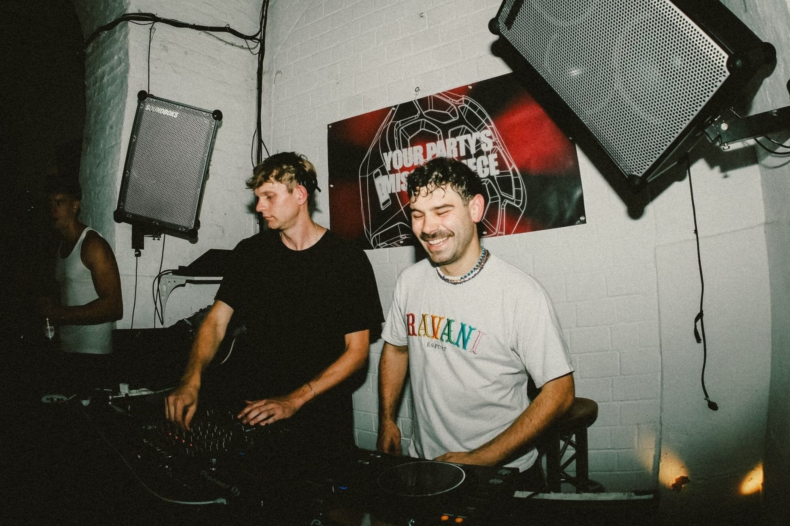
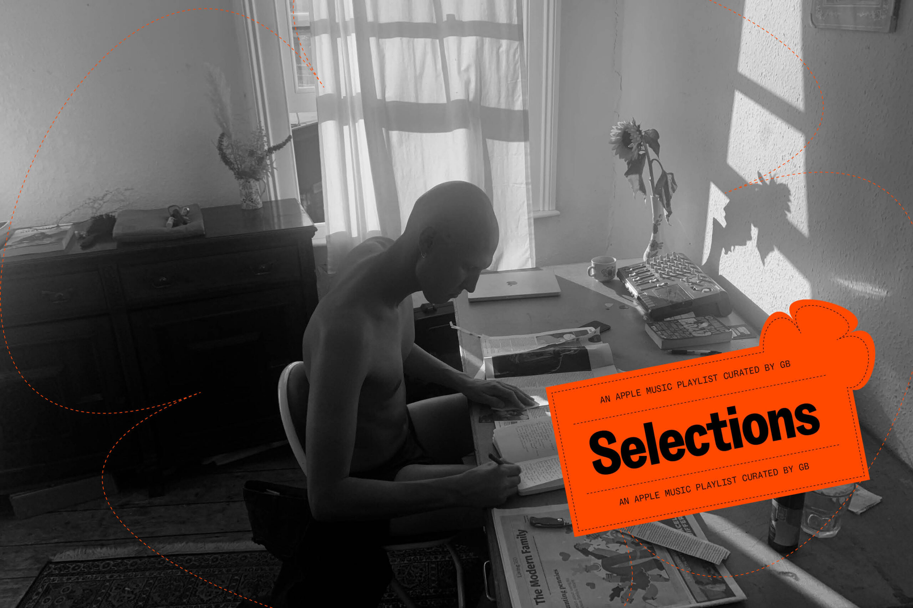

A CURATED PLATFORM FOR SOUND, PEOPLE, SPACE AND CULTURE.
SELECTED is an independent platform exploring underground electronic music through audiovisual sessions, conversations, events and cultural experiences.
SELECTED — INDEPENDENT ELECTRONIC MUSIC CULTURE — SELECTED — INDEPENDENT ELECTRONIC MUSIC CULTURE — SELECTED — INDEPENDENT ELECTRONIC MUSIC CULTURE — SELECTED — INDEPENDENT ELECTRONIC MUSIC CULTURE — SELECTED — INDEPENDENT ELECTRONIC MUSIC CULTURE — SELECTED — INDEPENDENT ELECTRONIC MUSIC CULTURE — SELECTED — INDEPENDENT ELECTRONIC MUSIC CULTURE — SELECTED — INDEPENDENT ELECTRONIC MUSIC CULTURE —
SELECTED is an independent platform exploring underground electronic music through audiovisual sessions, conversations, events and cultural experiences.
A culture overwhelmed by content, SELECTED puts human curation back at the centre. We discover artists, sounds, spaces and ideas that deserve to be heard.

Selected sounds and listening experiences.

Places and spaces shaping electronic culture.

Independent perspectives on electronic culture.
Mira K. — Berlin / Raw Techno

Nadia S. — Madrid / Deep House

Electronic music beyond genres.
Artists, selectors and creatives.
Places where culture happens.
Ideas, conversations and experiences.
Essay
Music
Interview